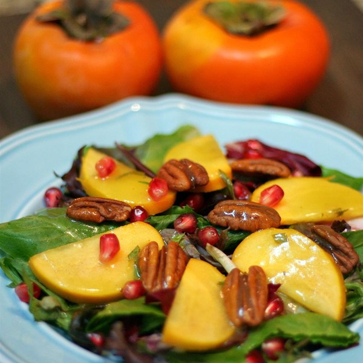

<div id="tab3" class="tab-content">
	<div class = "content">
		<arcticle class="dinner-recipe">
			<header><h2>Pecan Salad</h2></header>
			

			<div class = "ingredients">
				<h3>Ingredients</h3>
				<ul>
					<li>1/2 cup pecan halves</li>
					<li>3/4 cup orange juice, divided</li>
					<li>2 teaspoons cornstarch</li>
					<li>1 1/2 tablespoons honey</li>
					<li>1/4 cup extra-virgin olive oil</li>
					<li>1/2 lime, juiced</li>
					<li>salt and ground black pepper to taste</li>
					<li>7 fresh tarragon leaves, thinly sliced crosswise, or more to taste</li>
					<li>1 (8 ounce) package herb salad mix</li>
					<li>2 Fuyu persimmons, peeled and each cut into 8 pieces</li>
					<li>1 large pomegranate, peeled and seeds separated</li>
				</ul>
			</div>
			
			<h3>Directions</h3>
			<p> Preheat oven to 375 degrees F (190 degrees C). </p>
			<p>Bake pecans in the preheated oven until toasted and fragrant, 5 to 7 minutes. Set aside to cool.</p>
			<p>Whisk 1/2 cup orange juice and cornstarch together in a small saucepan; cook and stir over medium heat until mixture thickens, 3 to 5 minutes. Remove saucepan from heat and stir in honey until dissolved. Stir remaining 1/4 cup orange juice, olive oil, lime juice, tarragon leaves, salt, and pepper into orange juice mixture. Chill dressing in refrigerator, at least 30 minutes.</p>
			<p>Spread herb salad mix into a serving bowl or on individual plates; top with persimmon slices, pomegranate seeds, and pecans. Drizzle cooled dressing over salad.</p>		
		</article>
	</div>
</div>